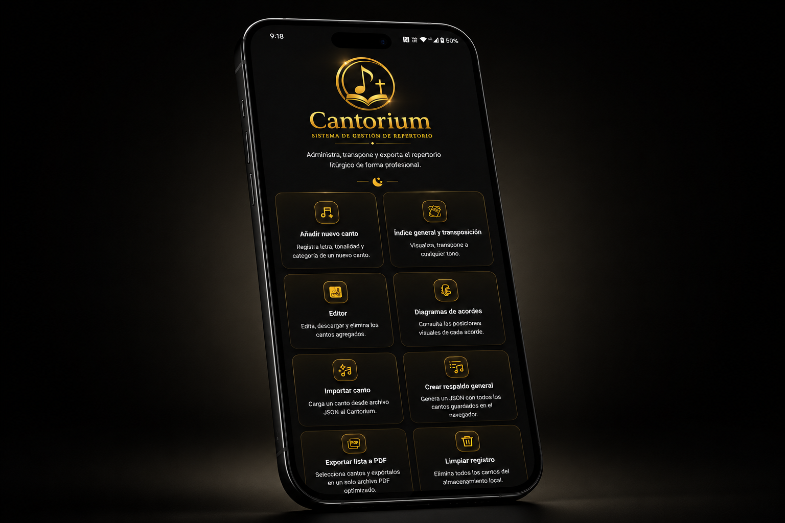
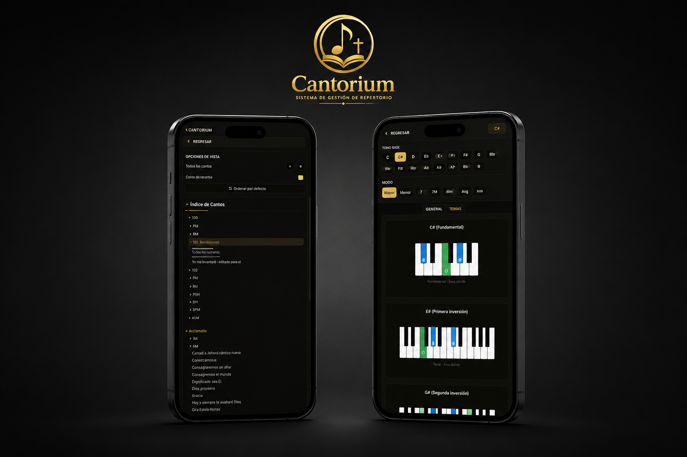

Bienvenido a Cantorium, la herramienta definitiva para gestionar tu repertorio musical de forma local, rápida y sin depender de internet. Diseña tu lista de cantos, transporta tonos y genera PDFs profesionales al instante.

Todo el control de tus cantos en la palma de tu mano
Ingresa título, autor, tonalidad y estilo. Escribir la letra es fácil: usa el prefijo "T:" para resaltar títulos y "A:" para los acordes.
Visualiza toda tu lista y cambia la tonalidad de cualquier canción al instante. Personaliza el tamaño de la letra y color de los acordes.
¿Dudas con una posición? Selecciona el acorde y el tono para ver gráficamente cómo posicionar los dedos en la guitarra o en el piano.
Mantén tu lista actualizada cargando un Respaldo General o importando cantos individuales sin perder ninguna de tus versiones existentes.
Selecciona los temas que vas a usar o toda tu lista y genera un archivo PDF profesional con índice incluido (requiere conexión para compilar).
Todo se guarda organizado en tu teléfono (Documentos/Cantorium). Tus datos te pertenecen por completo y son privados.

Todo lo que necesitas para tu ministerio. Pagos únicos, sin suscripciones.
Licencia vitalicia de la aplicación para iOS y Android.
$559 MXN
(Aproximadamente $29.99 USD)
Paquetes temáticos de repertorio listo para importar.
$99 MXN c/u
(Aproximadamente $4.99 USD por paquete)
Al adquirir o utilizar Cantorium, usted acepta cumplir con los siguientes términos y condiciones de uso.
Uso de la Licencia: Se le otorga una licencia personal, no exclusiva e intransferible para instalar y utilizar la aplicación Cantorium en sus dispositivos móviles compatibles para uso personal o ministerial.
Propiedad Intelectual: Todo el código, diseño visual, lógica y marcas relacionadas con Cantorium son propiedad exclusiva del desarrollador. Queda estrictamente prohibido revender, redistribuir, descompilar o alterar el software sin autorización expresa.
Limitación de Responsabilidad: Cantorium funciona de forma local. El usuario es el único responsable de salvaguardar su información mediante las funciones de Respaldo General provistas. No nos hacemos responsables por pérdidas de información debido a fallas mecánicas del dispositivo o limpiezas totales del sistema realizadas por descuido.
La privacidad es la base del diseño de nuestra aplicación. Nos aseguramos de que sus datos sigan siendo suyos.
Recopilación de Datos: Cantorium es una aplicación offline. No recopilamos, transmitimos, almacenamos ni vendemos ningún tipo de datos personales, letras de cantos, acordes, archivos o configuraciones que ingrese en el sistema. Todo se almacena localmente en la carpeta interna de su teléfono.
Servicios de Terceros: La funcionalidad de "Exportar a PDF" es la única sección que requiere acceso a internet para el procesamiento del documento técnico, el cual se realiza de forma efímera sin conservar copias del archivo en servidores externos.
Nuestras transacciones comerciales son procesadas de manera segura a través de Lemon Squeezy en su calidad de Merchant of Record.
Garantía de Satisfacción: Ofrecemos un período de reembolso completo de hasta 14 días a partir de la fecha de compra si la aplicación presenta fallas técnicas graves comprobables que impidan su ejecución en un dispositivo móvil con sistema compatible.
Proceso de Solicitud: Para solicitar un reembolso, puede gestionar la petición desde el correo de confirmación de compra emitido por Lemon Squeezy o ponerse en contacto con nuestro canal de soporte adjuntando evidencia de la incompatibilidad técnica o bug encontrado.